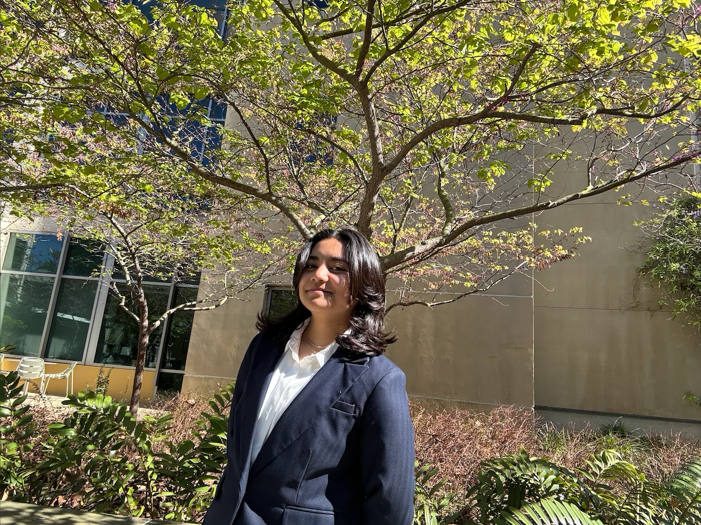
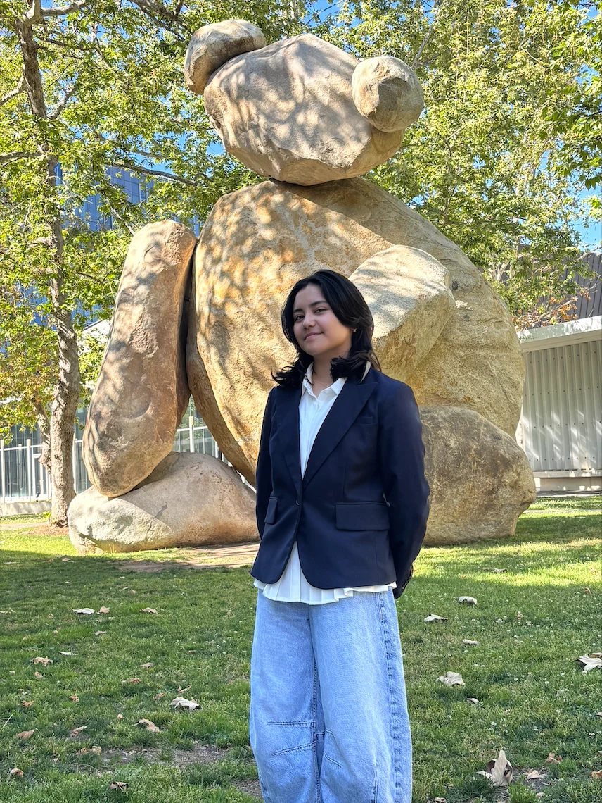
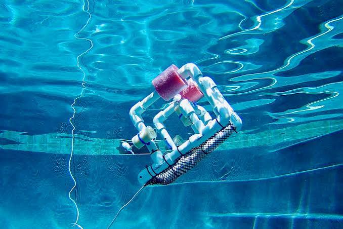
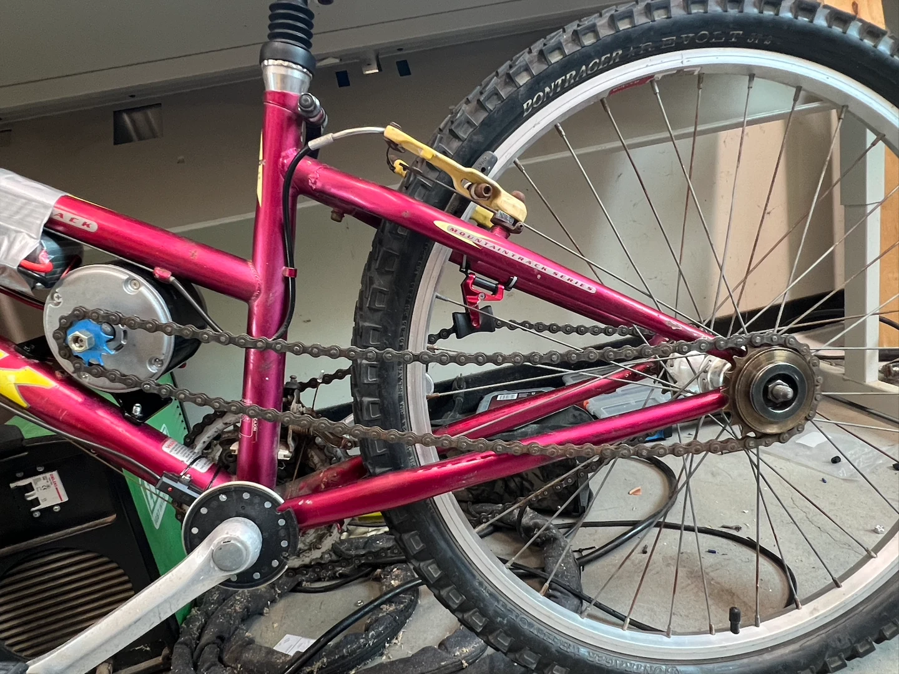
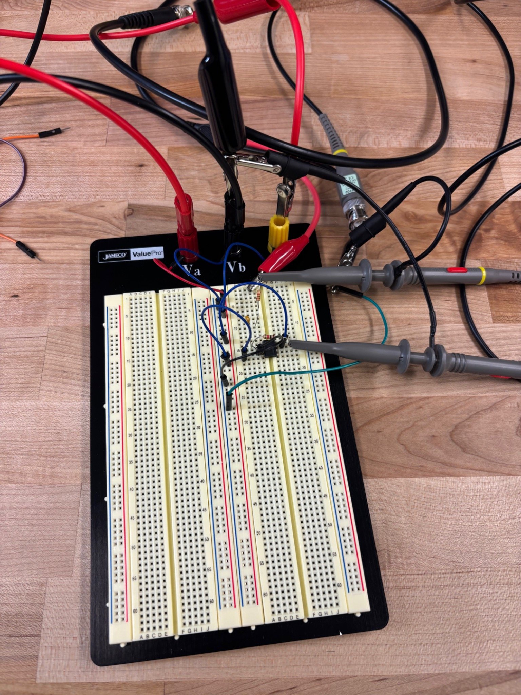
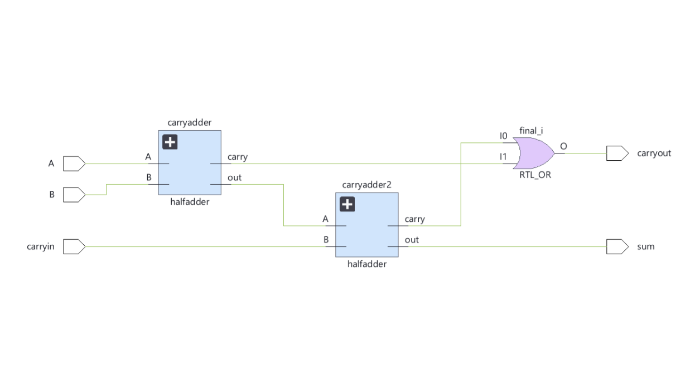
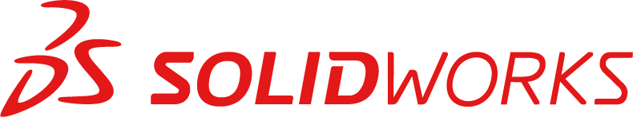

Hi, I’m Sydney
I’m currently a 3rd year Electrical Engineering transfer student at UC San Diego. I enjoy testing, troubleshooting and documenting how systems work, from analog and digital circuits to robotics and electromechanical projects.

I’m currently a 3rd year Electrical Engineering transfer student at UC San Diego. I enjoy testing, troubleshooting and documenting how systems work, from analog and digital circuits to robotics and electromechanical projects.
My path started at UC Santa Cruz, where I studied Computer Engineering with a concentration in Digital Hardware. I transferred to UC San Diego to study Electrical Engineering, building on my interest in circuits, computing and hardware design.
Robotics and electromechanical projects showed me how much I enjoy bringing the different parts of a system together.
I’m involved in robotics and engineering communities, including the Association for Computing Machinery and the Society of Women Engineers.

Experience with CAD, data visualization and engineering workflows.
Developed through campus IT support, team projects and technical documentation.
B.S. in Electrical Engineering
September 2026 – May 2028 (expected). Transferred from UC Santa Cruz.
B.S. in Computer Engineering, concentration in Digital Hardware
September 2024 – June 2026
Built and analyzed circuits, measured circuit behavior and compared experimental results with theoretical calculations. Physics covered Mechanics, Electricity & Magnetism, and Waves & Optics.
Calculus I–III, Linear Algebra, ODEs, Probability & Statistics, Discrete Math, C, Python, and Computer Systems & Assembly.
Electronics, embedded systems, digital hardware, circuit design, robotics, and the integration of electrical and mechanical systems.

Trained a character-level neural network in PyTorch to classify video game genres.

Designed and tested a pedal-assist electric drive system for a bicycle.

Built and tested analog circuits, then compared measured responses with theoretical predictions.

Verilog design and simulation of combinational and sequential digital circuits.
An ESP32-based speaker project.
A robotics project focused on following a marked path.

3D printing parts and projects